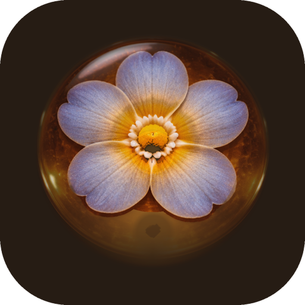
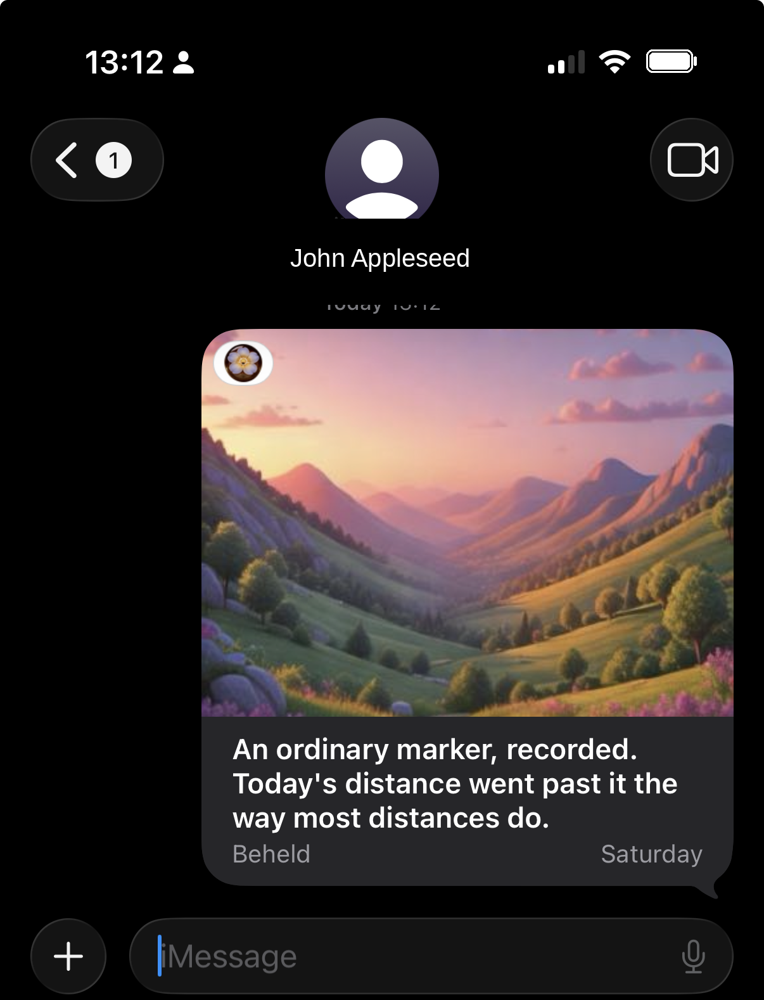
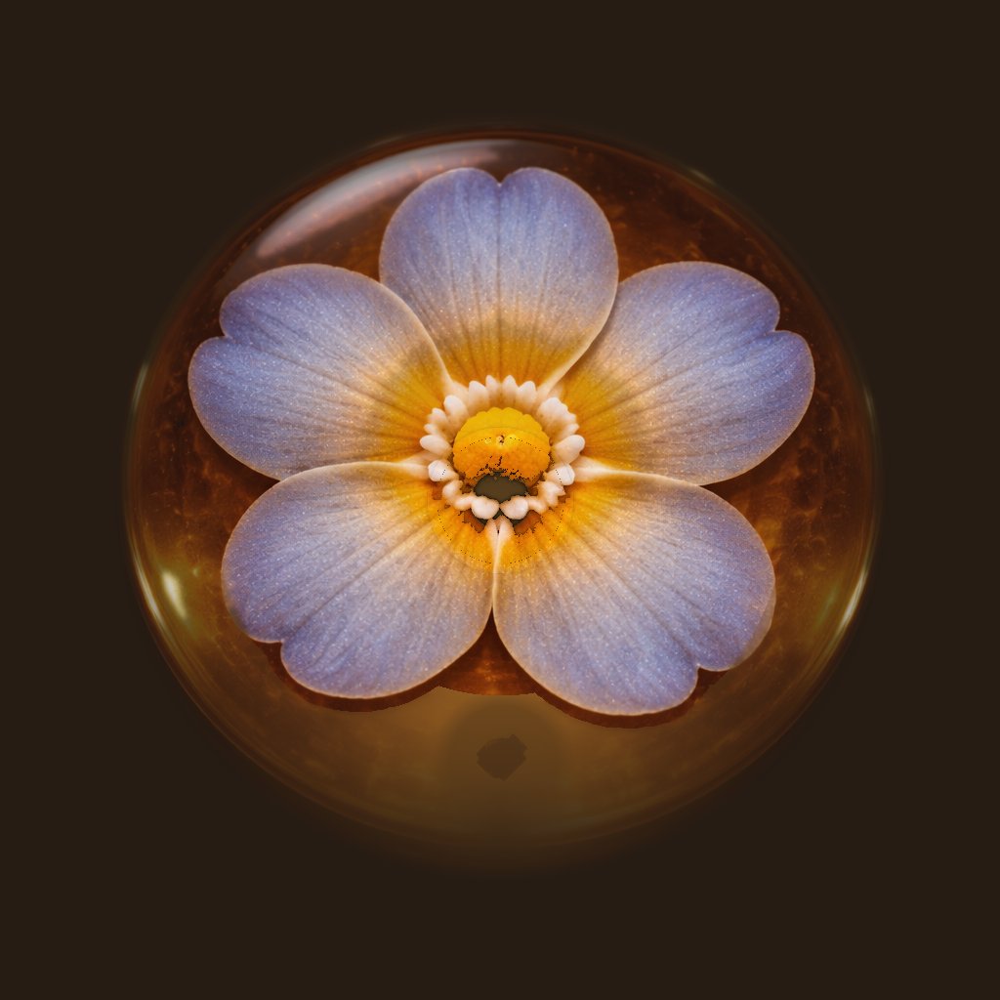

Beheld · Press kit

You didn't notice. Someone did.
Beheld is a self-writing movement journal for iPhone. Every morning, a nameless companion reads the day before from Apple Health and writes it down, in prose, in landmarks, and in an illustrated postcard. It speaks in distance, not numbers, and it stays quiet.
About Beheld
Beheld watches the movement data already on the iPhone and turns it into something worth reading. Each morning it writes a short journal entry about how the day before unfolded. "The length of Central Park. Two kilometers, folded into yesterday." It uses mode-neutral verbs (covered, went, gained, returned), so the journal reads the same however you move, on foot or on wheels. Distance and landmarks lead; steps, pushes, and elevation are supporting detail. The companion makes statements, never prompts, and it asks nothing of the reader.
When a milestone appears in the record, Beheld turns the distance into an illustrated postcard and leaves it in the journal. On Apple Intelligence iPhones, paid Personalization renders each postcard on the device for the milestone at hand; otherwise Beheld quietly uses a bundled illustration. The free version keeps writing every morning, with no subscription and no time limit. The one-time Personalization purchase adds the personal writing, it does not gate the journal.
A postcard can also leave the journal through SENT, an iMessage to one friend, with its caption beneath it. Once. To one person. Beheld doesn't see who. It is the only way Beheld travels between people, built with the same restraint as the rest of the app.
Privacy is literal here, not a line on a marketing page. Beheld reads Apple Health on the iPhone and writes there; your movement history is not uploaded to Beheld, an ad network, or any server. Where Personalization is active, the personal writing and the generated postcard images are created on the device through Apple's Foundation Models and Image Playground; the free journal is written from a bundled, author-written library with bundled illustrations. No movement data leaves the phone in either tier. There is no account, no external analytics, and no third-party SDK. The App Privacy label reads Data Not Collected. Beheld is made by eTurea, an independent iOS developer in Alberta, Canada.
The companion's voice
"The length of Central Park. Two kilometers, folded into yesterday."
"About a kilometer went into yesterday. Rest stayed part of the record."
"Kilimanjaro's height, gained yesterday. The rise was there before anyone thought to count it."
"Crater Lake, matched in pieces. Six kilometers, recorded without ceremony."
Sent
Worth keeping. Worth sending.
A milestone postcard can leave the journal as an iMessage, to one friend, with its caption beneath it. Tap the picture and the App Store opens to Beheld.
Once. To one person. Beheld doesn't see who. It is a quiet, built-in way for the journal to travel, restraint as a feature, not a growth tactic.

Private by design
Beheld reads Apple Health on the iPhone and writes there. Your movement history is not uploaded to Beheld, an ad network, or any server. When Personalization is available, the personal writing and postcard images are generated on the device through Apple's Foundation Models and Image Playground; the free journal uses bundled, author-written writing and bundled illustrations. No movement data leaves the phone in either tier.
There is no account, no external analytics, and no third-party SDK. The App Privacy label reads Data Not Collected. Purchases are handled by Apple through the App Store; Beheld does not receive payment details.
Fact sheet
From the developer
My iPhone has been quietly collecting movement data for years, and almost none of it ever turned into something I wanted to read. Every app I tried wanted to grade the day or tell me what to do tomorrow. Beheld is the journal I wanted: one that notices the day, writes it down, and stays quiet. The free companion is the whole product. The one-time Personalization purchase makes the writing about you specifically. That is the only thing the purchase does.
The companion is the product; I am the writer behind the writer.
eTurea, an independent iOS developer in Alberta, Canada
Screenshots
Set of four, 1320 × 2868: journal, postcard, stock postcard, settings.
Brand assets

Please keep the icon uncropped and unrecolored, and pair screenshots with the app name. The wordmark is simply Beheld in a serif face.
Press contact
For review codes, written questions, or higher-resolution assets, write to support@beheld.day. Beheld is a one-person project; you will hear back from the developer.
{kind=link}
{kind=link}
{kind=link}
{kind=link}
{kind=link}
{kind=link}
{kind=link}